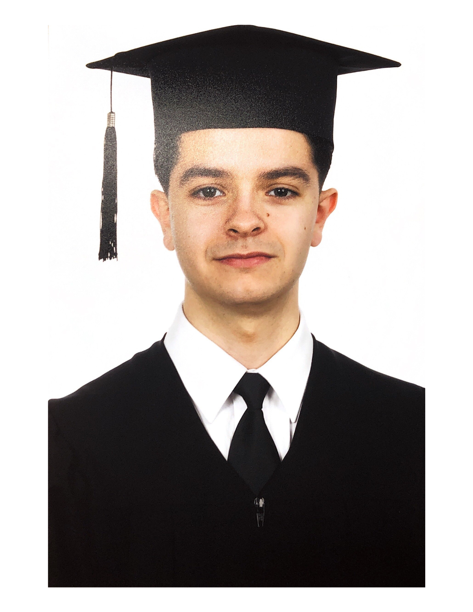

|
Nil Biescas I am currently looking for Summer 2026 internships in physical AI, generative AI, and multimodal learning. I am a first-year Master’s student in Data Science at École Polytechnique Fédérale de Lausanne (EPFL), and I previously graduated in the top three of Spain’s first Artificial Intelligence cohort at the Universitat Autònoma de Barcelona (UAB). I completed my final bachelor semester at the Technical University of Munich (TUM), where I conducted my thesis under the supervision of Daniel Cremers, Felix Wimbauer, and Dominik Muhle. I have nearly two years of research experience at one of the country’s leading AI centers, with publications at international venues including ECCV and ICDAR. I am fluent in English, Catalan, and Spanish, and I am deeply motivated to advance AI research and its real-world impact. At CVC I've worked on Document Understanding using graph neural networks. |
 |
{kind=link}
ResearchI'm interested in computer vision, deep learning, generative AI, and image processing. |

|
Haptic Teleoperation and Learning from Demonstration with the Franka Robotic Arm
Nil Biescas Manuscript, 2025 In this thesis we expand AnyCam, a self supervised method for predicting camera poses for dynamic videos, to predict point clouds of dynamic scenes. |
.png)
|
AnyCam-3D: Extending AnyCam for Dense 3D Geometry Reconstruction in Dynamic, Uncalibrated Videos
Nil Biescas Manuscript, 2025 Download PDF In this thesis we expand AnyCam, a self supervised method for predicting camera poses for dynamic videos, to predict point clouds of dynamic scenes. |
lm.png)
|
Where Layout Meets Language: Lightweight Spatial Enhancement to Large Language Models for Document Understanding
Nil Biescas Manuscript, 2025 Download PDF A paper exploring the interaction between visual document layout and natural language processing. |

|
LayeredDoc: Domain Adaptive Document Restoration with a Layer Separation Approach
Nil Biescas, Maria Pilligua, Javier Vazquez-Corral, Josep Lladós, Ernest Valveny, Sanket Biswas ECCV WiCV, ICDAR, 2024 project page / arXiv Documents can be seen as a composition of semantic layers, and decomposing these layers helps on Domain Adaptation for Document Restoration. |
|
|
GeoContrastNet: Contrastive Key-Value Edge Learning for Language-Agnostic Document Understanding
Nil Biescas, Josep Lladós, Sanket Biswas ICDAR, 2025 project page / arXiv A method for structured document understanding without relying on language or OCR. By combining geometric edge features and visual features in a two-stage graph attention framework, this model achieves strong performance on link prediction and entity recognition. It captures spatial relations between text elements, learning key-value pairs in forms and table layouts in invoices. |

|
Document Digitallization
Nil Biescas, Maria Pilligua, Xavi Soto, Jordi Longaron, Laia Vilardell Class Project, 2024 project page Our work focuses on converting complex physical documents into an editable digital format. The figure below outlines our pipeline, which separates textual and graphical elements before processing them. |
|
Feel free to steal this website's source code. Do not scrape the HTML from this page itself, as it includes analytics tags that you do not want on your own website, so use the github code instead. Also, consider using Leonid Keselman's Jekyll fork of this page. |